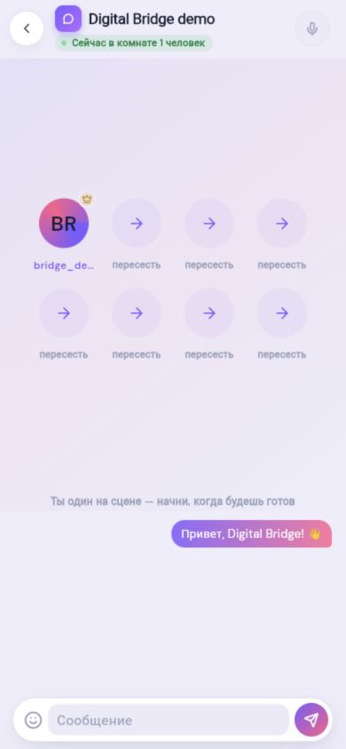
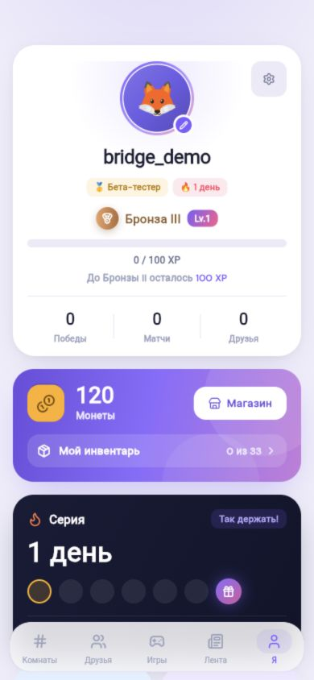
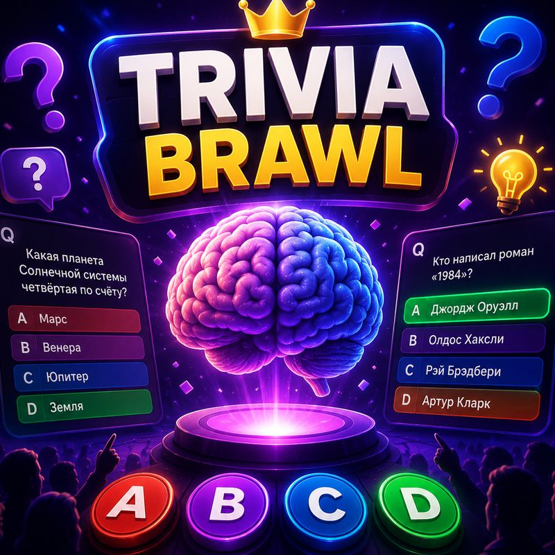
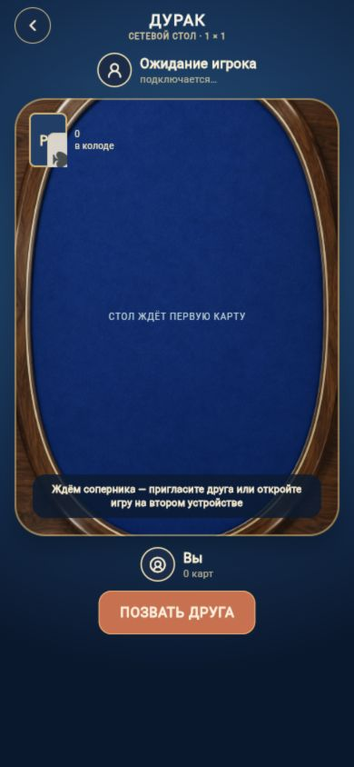
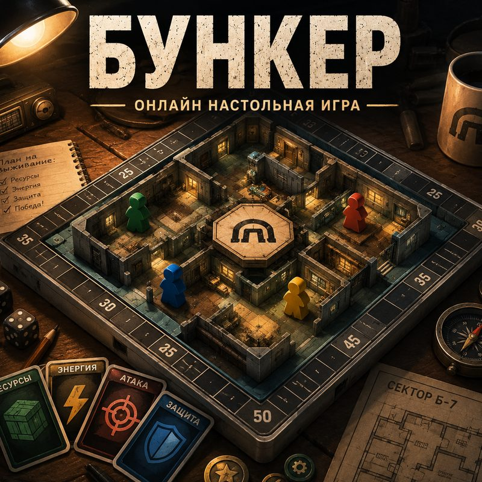

Зайти
Открыть приложение и увидеть комнаты и доступные игры.
Play Bro собирает друзей в одном месте: открой комнату, позови своих, выбери игру и вернись за реваншем.
Рабочий мобильный прототип с комнатами, чатом, играми, лентой, профилем и магазином. Ниже — кадры из запущенного приложения.


В Play Bro игровые режимы связаны с общением и профилем игрока. После партии остаются друзья, история и следующий повод играть вместе.
Открыть приложение и увидеть комнаты и доступные игры.
Создать комнату, написать в чат, пригласить друга.
Выбрать формат под компанию: вопросы, карты или обсуждение.
Следить за XP, монетами, достижениями и матчами.
Каждый кадр ниже снят с локально запущенного мобильного приложения. Нажмите на экран, чтобы рассмотреть его крупнее.
Для представленных режимов показываем обложку или экран игры и настоящий кадр лобби. Для полноценной сетевой партии нужны другие игроки.

ОБЛОЖКА ИГРЫ2–6 игроков. Пять быстрых раундов, ответы на время и общий результат.
Реальный экран лобби ↗
ЭКРАН ИГРЫСетевой стол 1 на 1. Матч ведёт сервер; результат связан с прогрессией.
Рассмотреть стол ↗
ОБЛОЖКА ИГРЫСценарий для 4–8 игроков: роли, аргументы и решения компании.
Реальный экран лобби ↗Казахстанская командная карточная игра уже работает как отдельная браузерная версия против ботов: четыре места за столом, две команды, раздача и взятки. Онлайн-режим ещё не открыт; в мобильный каталог Play Bro игра пока не встроена.
Мобильное приложение запускается в локальном тестовом окружении: комнаты, чат, три показанных режима, профиль, лента и магазин доступны для демонстрации. Belka существует отдельно как игра против ботов.
Рабочий прототип и проверенные продуктовые сценарии.
Восстановить внешнюю инфраструктуру, проверить голос и push на устройствах, подготовить доступ по приглашению.
Ищем обратную связь, пилотные сообщества и партнёров для следующего этапа Play Bro.